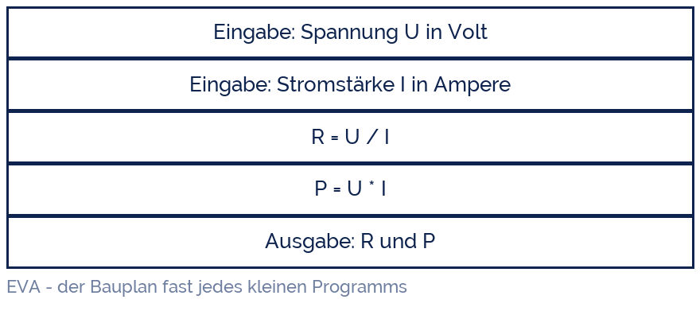

Sarahhax2210
Sarahhax2210
Good morning!
Nur das Schöne wird die Welt retten!
Fjodor Dostojewski
Nicht verzagen, Doc Alvers fragen!
Informatik — FOS 12
Grundstruktur I: die Folge
Ein Schritt nach dem anderen — vom Struktogramm zum laufenden Programm
Nicht verzagen, Doc Alvers fragen!
Kapitel 01
Drei reichen
Der Satz, auf dem die ganze Programmierung steht
Nicht verzagen, Doc Alvers fragen!
Die drei Grundstrukturen
| Struktur | Frage | Schlüsselwort in Python | diese Woche |
|---|---|---|---|
| Folge | Was kommt als Nächstes? | (nichts — Zeile für Zeile) | ja |
| Auswahl | Welcher Weg? | if / elif / else | Woche 15 |
| Wiederholung | Wie oft? | for / while | Woche 16 |
Böhm & Jacopini bewiesen 1966: mit diesen drei Strukturen lässt sich jeder Algorithmus schreiben
Kein GOTO, keine Sprünge — das ist der Kern der strukturierten Programmierung
Alles Weitere (Funktionen, Objekte) ist Ordnung und Bequemlichkeit, keine neue Macht
Nicht verzagen, Doc Alvers fragen!
Die Folge — unscheinbar und unverzichtbar
Anweisungen stehen untereinander und laufen von oben nach unten
Die Reihenfolge ist das Entscheidende: erst der Wert, dann die Rechnung damit
Typischer Fehler: mit einer Variablen rechnen, bevor sie einen Wert hat
Im Struktogramm: Kästen untereinander, kein Rahmen, kein Dreieck
In Python: eine Anweisung pro Zeile, keine Einrückung
Nicht verzagen, Doc Alvers fragen!
Kapitel 02
EVA
Eingabe — Verarbeitung — Ausgabe
Nicht verzagen, Doc Alvers fragen!
Der Bauplan jedes Programms
Eingabe: Werte holen — von der Tastatur, aus einer Datei, von einem Sensor
Verarbeitung: rechnen, prüfen, umformen — hier passiert die eigentliche Arbeit
Ausgabe: Ergebnis zeigen — Bildschirm, Datei, Anzeige
Die drei Teile nicht mischen: erst alles einlesen, dann rechnen, dann ausgeben

Nicht verzagen, Doc Alvers fragen!
Dasselbe in Python
# ohm.py - Widerstand und Leistung berechnen
# E - Eingabe
u = float(input('Spannung U in V: '))
i = float(input('Stromstaerke I in A: '))
# V - Verarbeitung
r = u / i
p = u * i
# A - Ausgabe
print('Widerstand R =', r, 'Ohm')
print('Leistung P =', p, 'W')Nicht verzagen, Doc Alvers fragen!
Vom Kasten zur Zeile — die Übersetzung
Jeder Kasten des Struktogramms wird eine Zeile Python — in derselben Reihenfolge
„Eingabe: x“ → x = float(input('...'))
Eine Rechnung → eine Zuweisung mit dem Ergebnis links vom Gleichheitszeichen
„Ausgabe: x“ → print(x)
Deshalb lohnt das Zeichnen: der Code schreibt sich danach fast von allein
Nicht verzagen, Doc Alvers fragen!
Kapitel 03
Sauber ausgeben
Zahlen lesbar machen
Nicht verzagen, Doc Alvers fragen!
f-Strings und runden
r = 4.666666666666667
print(r) # 4.666666666666667 - unlesbar
print(round(r, 2)) # 4.67
print(f'R = {r:.2f} Ohm') # R = 4.67 Ohm
print(f'R = {r:8.2f} Ohm') # R = 4.67 Ohm (rechtsbuendig)
name = 'Lena'
punkte = 47
print(f'{name} hat {punkte} von 60 Punkten ({punkte/60:.1%})')
# Lena hat 47 von 60 Punkten (78.3%)Nicht verzagen, Doc Alvers fragen!
Rechenzeichen, die man kennen muss
| Zeichen | Bedeutung | Beispiel | Ergebnis |
|---|---|---|---|
| + - * | plus, minus, mal | 3 * 4 | 12 |
| / | Division (immer float) | 7 / 2 | 3.5 |
| // | ganzzahlige Division | 7 // 2 | 3 |
| % | Rest (Modulo) | 7 % 2 | 1 |
| ** | Potenz | 2 ** 10 | 1024 |
Punkt vor Strich gilt wie in der Mathematik — Klammern setzen, wenn es eng wird
% ist der heimliche Star: gerade/ungerade, Vielfache, Uhrzeit, Prüfziffern
Nicht verzagen, Doc Alvers fragen!
Kapitel 04
Testen
Ein Programm, das läuft, ist noch lange nicht richtig
Nicht verzagen, Doc Alvers fragen!
Testfälle für den Ohm-Rechner
| Eingabe U | Eingabe I | erwartet R | erwartet P | Ergebnis |
|---|---|---|---|---|
| 12 | 2 | 6.0 | 24.0 | passt |
| 230 | 0.5 | 460.0 | 115.0 | passt |
| 12 | 0 | Fehler | 0.0 | Absturz: ZeroDivisionError |
| zwoelf | 2 | Fehler | Fehler | Absturz: ValueError |
Testfälle werden vorher aufgeschrieben — mit dem Ergebnis, das man erwartet
Immer dabei: ein normaler Fall, ein Randfall (0) und ein Unsinn-Fall
Was das Programm bei Unsinn tun soll, entscheidet ihr — abstürzen ist die schlechteste Antwort
Nicht verzagen, Doc Alvers fragen!
Erst den Testfall, dann das Programm. Wer nicht weiß, was herauskommen soll, merkt nie, dass etwas Falsches herauskommt.
Merksatz
Nicht verzagen, Doc Alvers fragen!
Fun Facts: die Folge
Böhm und Jacopini veröffentlichten ihren Beweis 1966 auf Italienisch — die Welt las ihn erst Jahre später
EVA heißt im Englischen IPO (Input-Process-Output) und stammt aus der Lochkartenzeit
Das erste „Hallo Welt“ stammt von Brian Kernighan, 1972 — heute in über 400 Sprachen nachgebaut
Mars Climate Orbiter, 1999: ein Team rechnete in Pfund, das andere in Newton — 125 Mio. $ verglüht
Die Reihenfolge zählt: a, b = b, a tauscht in Python zwei Werte in einer Zeile
Nicht verzagen, Doc Alvers fragen!
Eure Aufgabe: drei kleine EVA-Programme
Kreis: Radius einlesen, Umfang und Fläche ausgeben, beides auf 2 Stellen gerundet
Rabatt: Preis und Rabatt in Prozent einlesen, Endpreis mit f-String ausgeben
Zeit: eine Sekundenzahl einlesen und als Stunden : Minuten : Sekunden ausgeben (Tipp: // und %)
Zeichnet zu jedem Programm zuerst das Struktogramm, dann tippt ihr
Schreibt je drei Testfälle in eine Tabelle — vor dem ersten Programmstart
Nicht verzagen, Doc Alvers fragen!